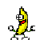

Video for Scratch Game Story for Python
Written Narration From Video
Although the game somewhat lags on my computer, the viewer can see that there is an introduction slide explaining the controls and that all the controls work. The viewer can also see that the game is a simple 2 level maze with 4 total backgrounds. There is a song playing throughout the entire game for entertainment purposes. Every time the purple block is touched, the black block starts over again at the start. When the black block touches the green part at the end of the maze, it turns into multiple colors to show that the user has completed the level and after the second level, the background switches and Jimmy starts dancing for the user’s entertainment.
Making of Game
The game was fairly simple to make but took a long time because of the drawing of each maze and the coding of all the different sprites. The block was made to not touch each line by coding when it touches the line color, it will not go past it. It was also made so that when the block touches the green stripe at the end, it would change colors and then move onto the next level or to the end of the game. The music in the background was our opportunity because it was the easiest to code but possibly the most effective part of our project. The project was collaborative with Anthony and we both worked on it equally. I made the first maze, he made the second maze, and the extras were fairly easy to just collaborate and code. Although most of the aspects weren’t part of the actual game, they were important for user experience purposes. We also added in some aspects for comedic effect such as Jimmy dancing to Work It by Missy Elliott at the end of the project.